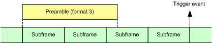

The LTE signaling application provides trigger signals that can be used by other R&S CMW applications to synchronize to the generated LTE downlink signal.
- "LTE Sig<i>: FrameTrigger" (for PCC)
- "LTE Sig<i>: FrameTrigger SCC<n>"
- "LTE Sig<i>: PRACH Trigger"
- "LTE Sig<i>: TPC Trigger" (for PCC)
- "LTE Sig<i>: TPC Trigger SCC<n>"
Trigger event at the beginning of each uplink radio frame. If an SCC uplink is configured, there are separate trigger signals for the PCC and the SCC.
This signal can be used to trigger LTE multi-evaluation measurements (option R&S CMW-KM500 / -KM550).
Trigger event for each received PRACH preamble. When a preamble has been successfully received and detected by the "LTE Signaling" application, a trigger signal is generated. It is aligned to the beginning of the fourth subframe after the subframe in which the preamble has started. The following figure illustrates this timing for preamble format 3.

The PRACH trigger signal can be used to trigger LTE "PRACH" measurements (option R&S CMW-KM500 / -KM550). When the measurement receives a trigger event, it evaluates already measured data to provide results for the preamble.
Trigger event generated when a single TPC pattern is executed ("Single Pattern" or "User-defined Single Pattern" or "Flexible UL Power"). If an SCC uplink is configured, there are separate trigger signals for the PCC and the SCC.
This signal can be used to trigger a single shot power measurement using the LTE multi-evaluation measurement (option R&S CMW-KM500 / -KM550).